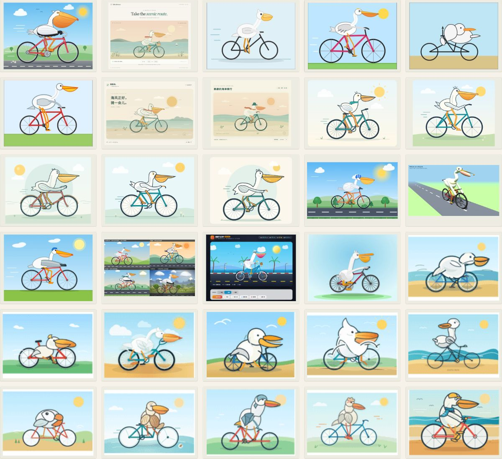
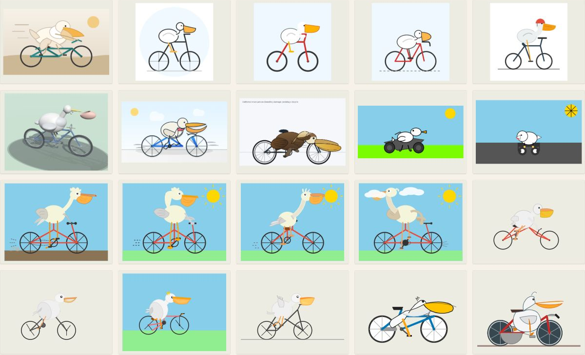
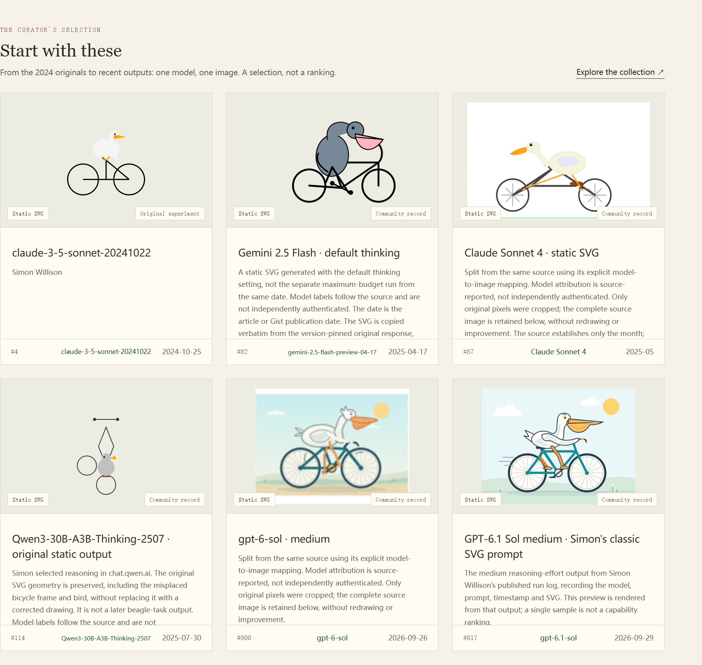

ACTUAL OUTPUTS. ORIGINAL SOURCES.
One prompt.
A whole flock.
Collecting all documented pelican-riding-a-bicycle cases across AI models, dates and media.
Generate an SVG of a pelican riding a bicycle.
824Works
543Timeline representatives · a subset
144Source articles
1Separate benchmark collection
SNAPSHOT / 2026-10-01
The earlier answers.
Open the archive ↗
Every image has a story.
Open the archive ↗
GET /api/v1/specimens?q=Gemini&lang=en&limit=3
GET /api/v1/timeline?family=Claude&lang=en
MCP https://pelicanmap.aveniqa.com/mcp
search_specimens · get_specimen · get_timeline